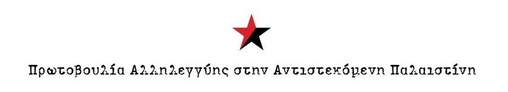
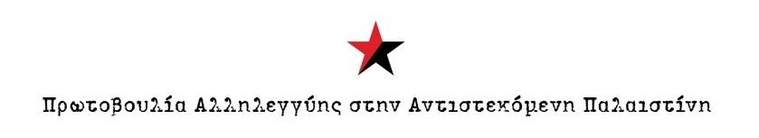

Γνωρίστε μας
Πίσω από την επιτυχημένη διοργάνωση του Φεστιβάλ βρίσκονται άνθρωποι και συλλογικότητες που
δρουν και συμπράτουν από κοινού στις τρεις αυτές πόλεις Λεμεσός, Άγιος Νικόλαος και Χανιά.
Εμπνεύστρια της ιδέας, είναι η Παλαιστίνια εικαστικός Jafra Abu Zoulouf που ζει στη Λεμεσό τα τελευταία χρόνια και σθεναρά προσπαθεί να διαδώσει το τι βιώνει ο
λαός της μέσω της 7 ης τέχνης. Η ίδια εργάζεται ώστε να εξασφαλίζει τα πνευματικά δικαιώματα των
δημιουργών και το Φεστιβάλ να παραμένει ανεξάρτητο και χωρίς καμία χρηματοδότηση πέραν των
εθελοντικών εισφορών.
Μετά την επιτυχία που σημείωσε στη Λεμεσό, το περσινό Φεστιβάλ μεταφέρθηκε στην Κρήτη και
συγκεκριμένα στον Άγιο Νικόλαο με διοργανωτές την Ομάδα του Αντιρατσιστικού Φεστιβάλ Αγίου
Νικολάου και αγκαλιάστηκε με θέρμη από το κοινό.
Φέτος, η πόλη των Χανίων, αποφάσισε να ενταχθεί στο κίνημα μας, να σταθεί αλληλέγγυα μαζί μας
και να γίνει περήφανος οικοδεσπότης του PIFFLemesosCrete. Αυτή η προσθήκη αποτελεί απόδειξη
της αυξανόμενης αλληλεγγύης και της κοινής πίστης στη δύναμη του κινηματογράφου να
υπερασπίζεται τη δικαιοσύνη, να αμφισβητεί την καταπίεση και να λέει την αλήθεια. Είναι επίσης μια
μοναδική και βαθιά συντονισμένη προσπάθεια, που φέρνει σε επαφή τρεις πόλεις, οι οποίες
εργάζονται συλλογικά για να διασφαλίσουν ότι οι ιστορίες των Παλαιστινίων θα ακουστούν και ο
αγώνας τους για δικαιοσύνη θα αναγνωριστεί.
Η Λεμεσός μαζί με την Ομάδα του Αντιρατσιστικού Φεστιβάλ Αγίου Νικολάου, το Κοινωνικό Στέκι
Μεταναστών και η Συνέλευση Αλληλεγγύης στον Παλαιστινιακό λαό σε συνεργασία με το
Αντιρατσιστικό Φεστιβάλ Χανίων συνεργάζονται από κοινού για να ζωντανέψουν αυτό το Φεστιβάλ,
το οποίο θα πραγματοποιηθεί τις ίδιες ημερομηνίες και σε ταυτόχρονο χρόνο, στον Κινηματογράφο
Χριστίνα στον Άγιο Νικόλαο, στο Πνευματικό Κέντρο Χανίων αλλά και στην έδρα του, στη Λεμεσό της
Κύπρου.
Οι ομάδες που συμμετεχουν

 
